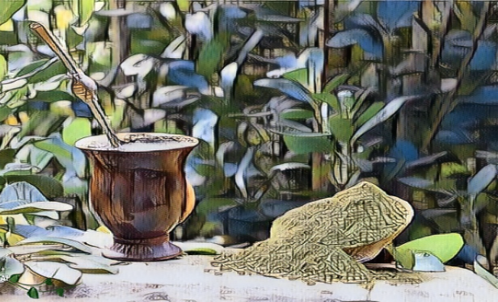

História
A história da erva-mate é profundamente entrelaçada com os aspectos históricos, culturais e econômicos das regiões onde ela é cultivada, principalmente no sul da América do Sul. A planta, cientificamente conhecida como Ilex paraguariensis, foi descoberta e utilizada inicialmente pelos povos indígenas guaranis, que habitavam as regiões subtropicais da atual Argentina, Paraguai, Uruguai e sul do Brasil. Os guaranis foram os primeiros a reconhecer as propriedades revigorantes e medicinais da erva-mate, consumindo-a principalmente na forma de infusões quentes, conhecidas como "chimarrão" ou "mate" entre eles.
Economia
Com a chegada dos colonizadores europeus ao continente sul-americano, a erva-mate ganhou espaço nas economias locais. Os colonizadores espanhóis e portugueses logo perceberam o valor comercial da planta e começaram a explorá-la de maneira mais sistemática. A erva-mate tornou-se uma commodity importante no comércio entre as colônias e a Europa, impulsionando o desenvolvimento de rotas comerciais e assentamentos ao longo dos rios da região.
Durante os séculos XVIII e XIX, especialmente no sul do Brasil e no Paraguai, a produção de erva-mate cresceu significativamente. O ciclo econômico da erva-mate influenciou profundamente a demografia, a cultura e a economia das áreas de cultivo. O trabalho nas plantações de erva-mate atraiu migrantes de várias partes do continente, contribuindo para a formação de comunidades multiétnicas e multiculturais.
No século XIX, com o avanço das técnicas de cultivo, beneficiamento e distribuição, a produção de erva-mate se industrializou. Grandes empresas e cooperativas foram estabelecidas para gerenciar a produção em larga escala e exportar para mercados internacionais. Paralelamente, a cultura do chimarrão e do tereré se consolidou nas regiões onde a erva-mate era consumida, tornando-se uma parte integral da identidade cultural dessas áreas.
Cultura
Hoje, a erva-mate continua a desempenhar um papel vital nas economias regionais do sul da América do Sul. É cultivada principalmente no Brasil, Argentina e Paraguai, sendo exportada para diversos países ao redor do mundo. Além de seu valor econômico, a erva-mate mantém uma importância cultural significativa, sendo consumida diariamente por milhões de pessoas como uma bebida que promove sociabilidade e tradição.
Em resumo, a história da erva-mate é uma narrativa rica que atravessa séculos, conectando aspectos históricos, culturais e econômicos que moldaram não apenas as paisagens naturais, mas também as sociedades e as identidades culturais das regiões onde esta planta é cultivada e apreciada até os dias de hoje.